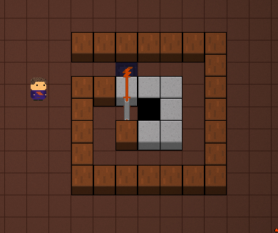
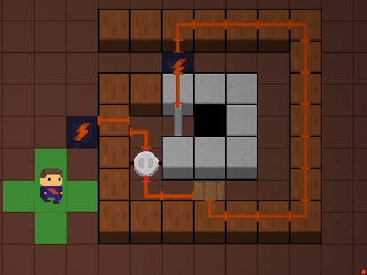
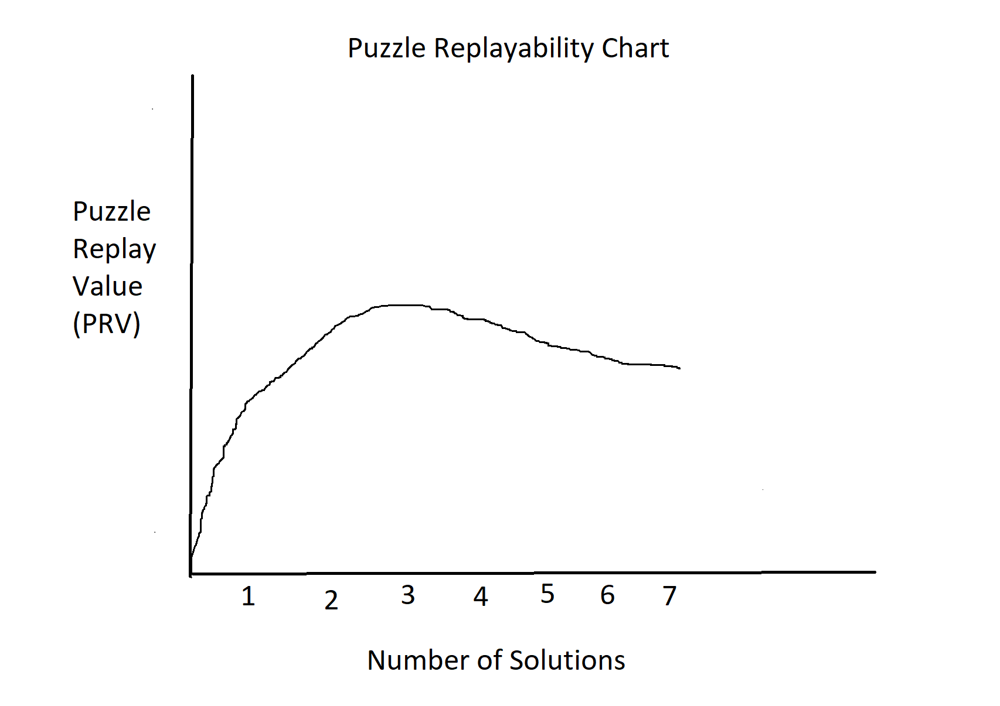
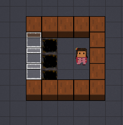
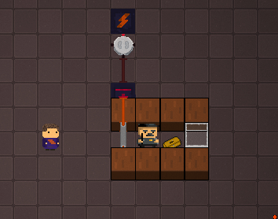

I don’t usually like to do the same thing twice.
I don’t reread books or rewatch TV series. At restaurants, I always try new dishes over old favorites. The few times I have been forced to watch the same film twice, I’ve struggled to pay attention during the second time.
That’s what makes my love of the roguelike genre so surprising.
An indie hit called The Binding of Isaac is what made me fall in love with roguelike games, a genre of games centered around the idea that death forces the player to restart the entire game. This type of gameplay only works if the game is designed around being played many times, usually seeing the same content repeated in different contexts.
I first played The Binding of Isaac at my friend’s house. We took turns playing, switching every few minutes while struggling to progress past the earliest stages of the game. As soon as I got home, I purchased the game to play on my own. At first, my goal was merely to beat the game a single time. But after I won, something important happened: I played again. And again, and again, and again.
There’s something magical about a game that can be played time and time again, as the player slowly gains mastery and discovers secrets. The ability to make familiar content feel fresh and unique at every playthrough is one that few games have, but it’s deeply powerful.
Years later, I found myself sitting with three friends in my high school computer science club, discussing ideas for a puzzle roguelike game. That game would go on to become Herman Electro. We all loved The Binding of Isaac and were inspired by it, but Herman Electro posed some unique challenges. It’s easy to design the core gameplay loop of fighting enemies and collecting combat-enhancing items around replayability. Designing replayable puzzles is a lot more difficult.

Today, Herman Electro consists of six floors of electricity-themed puzzles, randomly selected from our pool of around 500 total puzzles. Armed with a selection of “basic tools,” high-powered “supertools,” and unique character abilities, the player is challenged to complete puzzles and reach the end of the sixth floor, unlocking new characters and tools along the way. Winning the game requires reaching the endgame as each character and discovering the secret content hidden in the Herman Electro universe.
To make sure our puzzles are entertaining even when solved multiple times, my team came up with a few strategies. These strategies could likely apply not just to Herman Electro but to any game focusing on replayable puzzles (or replayability in general).
In this first post in our weekly column on game design and Herman Electro, I’ll discuss the guiding principles we’ve used to create replayable puzzles.
1. Multiple solutions exist (but not too many)
When thinking about replayability, the first thing that comes to mind is multiplayer games.
Multiplayer games are usually restricted to only a handful of maps and locations. For example, players of first-person shooters play on the same maps again and again; for players of the popular MOBA League of Legends, the most play takes place on a single map, Summoner’s Rift.
These games provide huge replayability despite the limited settings and maps they provide; they are able to do so because, even when playing in the same environment, the player interacts with that environment dynamically, and the optimal strategy changes every game.
The dynamism of multiplayer games comes inherently from the other players in the game. In Herman Electro, we had to come up with other methods of creating replayability. One method is designing puzzles that have more than one solution; that way, even when you come across the same puzzle twice, you won’t play it the same way, much like how a single map in a first-person shooter can allow for a variety of strategies and playstyles.
For example, here’s the original version of a Herman Electro puzzle:
While the puzzle is aesthetically pleasing and interesting to a beginner, it’s pretty boring once you’ve seen it already. So I modified it a bit:
Now the puzzle has two solutions, and it’s a lot more interesting for experienced players while still approachable for beginners.
However, more solutions don’t necessarily add more replayability. Imagine a first-person shooter with an extremely complex map, filled with side-quests and engaging content. There are a couple problems with such a map: it is very difficult to balance strategies, and players might feel overwhelmed by the amount of content and gravitate towards the simpler strategies that are still powerful.
Similarly, a Herman Electro puzzle with dozens of solutions probably has a few solutions that are fairly obvious or similar to one another, and players will be more likely to have the resources necessary to use one of these solutions. They will then miss out on all the other solutions, and the puzzle will become less replayable, not more.
It’s hard to quantify the ideal number of solutions, and it differs from puzzle to puzzle, but generally the most interesting puzzles have somewhere between two and four solutions.
There is one problem with using puzzles that have multiple solutions: why would the player not just use the same solution every time they see the puzzle, rather than spend the time and energy required to learn new solutions? That is where our second design principle comes in.
2. The same solutions aren’t always available
Let’s go back to our comparison with multiplayer games. Say we have a fun, engaging multiplayer game with a variety of unique strategies. Sounds pretty good so far.
But what if all of those strategies are available and have the same power level for every game, no matter what the opposing team does? In that case, a powerful strategy -- for example, dividing the team in half, with each half going to one end of the map -- is always going to be available. There’s no reason to use any other strategy to adapt to the opponent, because having the team separate into halves is going to work every time, and learning another strategy is a waste of time.
Similar logic applies to Herman Electro. Puzzles are more fun if they have multiple solutions, but if every solution is available for every puzzle at all times, the puzzles might as well just have a single solution, since players would never need to learn any others.
Limiting the player’s resources is crucial for a number of reasons. It sustains a feeling of intensity throughout the game, and it adds a layer of strategic inventory manipulation. It also means that, while a solution for at least one available puzzle will be provided when necessary, the player won’t always be able to repeat a solution they used previously.
Restricting the player’s options in each puzzle encourages the player to adapt, either by learning new solutions, trying to beat other puzzles in hopes of getting the basic tools for a known solution, or relying on character abilities and supertools.
Restriction also gives the player a reason to seek optimal solutions rather than wasting tools. After all, a single saw might be the difference between achieving your dreams and dying in a pit.
Even with these two design principles, however, we noticed that puzzles would start to feel repetitive after a long period of play, and a craving for new puzzles would develop. So we came upon design principle number three.
3. New puzzles are introduced over time
Early on in Herman Electro development, the game had a lengthy tutorial that briefly touched on every tile, animal, and basic tool in the game. It was complicated, frustrating, and overall a design failure.
A lot has changed since then, and the game now introduces content much more slowly, with new players only interacting with the game’s foundational tiles and tools. One result of this change is that, as new tiles are unlocked over time, new puzzles that include those tiles are unlocked over time as well.
The introduction of new puzzles over time isn’t just good for teaching new concepts; it’s also good for replayability.
If players were exposed to every puzzle in the game from the beginning, they would learn all of the puzzles at roughly the same rate, and their experience would gradually shift from playing all-new puzzles to playing exclusively puzzles they have already seen before.
With a slow release of puzzles over time, players become familiar with some of the puzzles, but they are also constantly facing puzzles they haven’t seen before. These new puzzles maintain a consistent level of challenge and freshness. The overall puzzle set feels much richer with some puzzles known and others unknown, since known solutions can be leveraged to get the right tool set to beat the unknown puzzles.
On an emotional level, a playthrough of Herman Electro feels more interesting with a combination of known and unknown puzzles as well. The familiar puzzles are comforting, even if the player doesn’t have any known solutions; the unfamiliar puzzles require more active engagement and ensure that even an experienced player needs to strategize and adapt to new situations.
Herman Electro is a unique game for a number of reasons, not least of which is the replayability of its puzzles. By designing puzzles around replayability, I hope we’ve been able to capture the kind of excitement and desire for mastery that roguelike games inspired in me eight years ago.
Thanks for reading this first post of our weekly column. We have a lot more to discuss about game design, Herman Electro, and what they mean to us. See you next week.
_________
If you have any questions or comments, feel free to email us at hermanelectrogame@gmail.com. You can follow our progress and see more posts and gifs on our Twitter account, @HermanElectro.